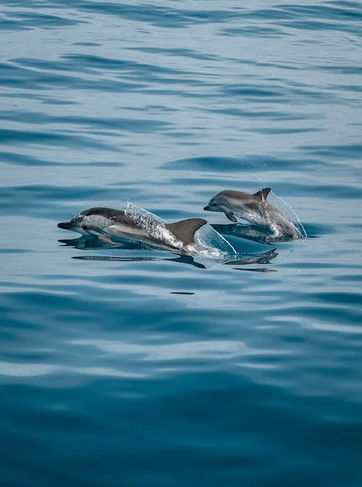

Dive into the World of Dolphins: Marvels of the Sea ! | |||
|
Dolphins are marine mammals known for their intelligence, social behavior, and playful nature. They belong to the family Delphinidae, which includes around 90 species of dolphins. Physical Characteristics: Dolphins have streamlined bodies with a dorsal fin on their back and pectoral fins on each side. They also have a powerful tail, known as a fluke, which propels them through the water. Most dolphins are relatively small, ranging from 4 to 12 feet in length, although the size can vary depending on the species. |
|||
|
 Intelligence and Communication: Dolphins are considered one of the most intelligent animals on Earth. They exhibit advanced problem-solving skills, self-awareness, and the ability to learn complex tasks. They communicate using a variety of vocalizations, clicks, whistles, and body movements. Some species have signature whistles, which function like names and help individuals identify each other. Social Behavior: Dolphins are highly social animals that often live in groups called pods. These pods can vary in size from a few individuals to several dozen, depending on the species and environmental conditions. Within a pod, dolphins engage in activities such as hunting, playing, and even cooperating to solve challenges. Cultural Significance: Dolphins have a long history of interaction with humans and have been featured in mythology, literature, and art from various cultures around the world. They are often associated with positive attributes such as intelligence, communication, and friendship. Overall, dolphins are fascinating creatures that continue to capture the interest and imagination of humans due to their remarkable behaviors and characteristics. |
|||